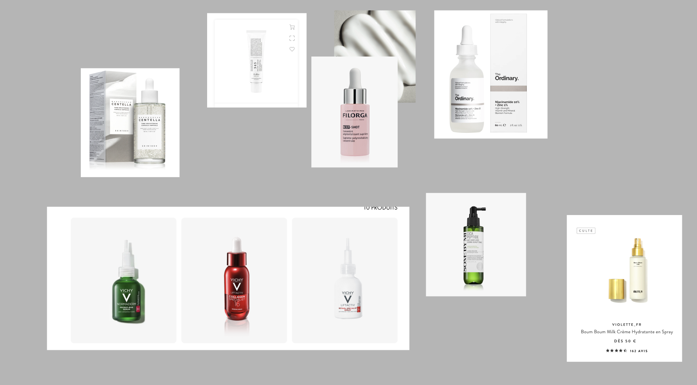

Soumy Gold
Projectdetail
Soumy Gold
Een brandingproject rond skincare dat luxe beelden, zorgvuldige styling en een zachtere, premium visuele richting verkent.

Projectintro
Overzicht
Proces
Een luxe skincaregevoel opbouwen.
Een skincareconcept creëren dat rustig, premium en zorgvuldig gemaakt aanvoelt via beeld en branding.
Ik verkende luxe skincarecampagnes, verfijnde verpakkingen en zachte visuele werelden die kwaliteit en zorg uitstralen.
De richting combineerde gouden accenten, zacht licht, strakke compositie en een elegantere, beautygerichte sfeer.
Ik ontwikkelde skincarefotografie, brandingideeën en creative direction om een luxe visuele stijl vorm te geven.
Het eindresultaat communiceert een premium skincare-identiteit met een zachtere en verfijndere visuele uitstraling.
Ik leerde hoe subtiele details zoals materiaal, belichting en compositie het gevoel van een merk sterk kunnen beïnvloeden.
Beelden
Visueel proces.

Ik zocht minimalistische inspiratie omdat de klant een strakke en verfijnde visuele stijl voor het merk wilde.

Voordat ik de Soumy Gold-producten begon te fotograferen, toonde ik de klant eerst skincaretestbeelden om te zien of deze zachte en minimalistische stijl overeenkwam met wat ze wilden.
Dit beeld toont de uiteindelijke richting die voor Soumy Gold werd gecreëerd. Ik werkte aan de fotografie, de branding en de algemene esthetiek om een strakke en luxe skincare-identiteit voor het merk te creëren.
Reflectie
Persoonlijke groei
Het moeilijkste aan dit project was een luxe gevoel creëren zonder de beelden te ingewikkeld te maken. Ik leerde meer aandacht te besteden aan sfeer, styling en kleine visuele keuzes die de perceptie bepalen. Dit project hielp me groeien in branding, visuele gevoeligheid en het uitdrukken van een bewustere creatieve richting.